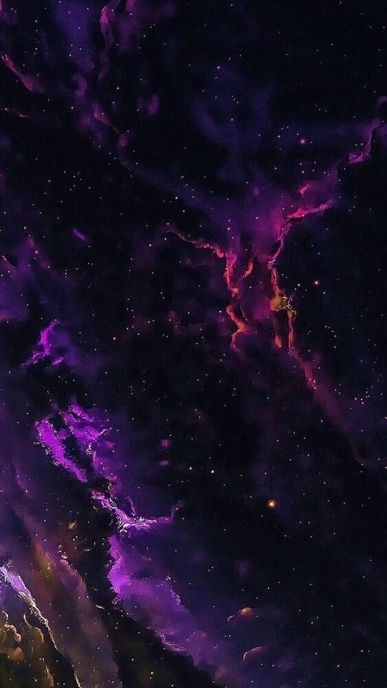
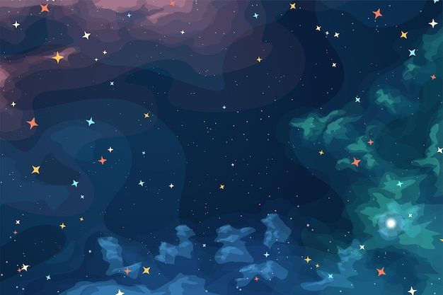

El universo es el conjunto de todas las entidades físicamente detectables que interactúan entre ellas
dentro del espacio-tiempo de acuerdo con leyes físicas bien definidas.
Sin embargo, el término también se utiliza informalmente en sentidos contextuales ligeramente diferentes
y alude a conceptos como cosmos, mundo, naturaleza o realidad.
Su estudio, en las mayores escalas, es el objeto de la cosmología, disciplina basada en la astronomía y
la física, en la cual se describen todos los aspectos de este universo con sus fenómenos.
Las ciencias físicas modelizan el universo como un sistema cerrado que contiene energía y materia
adscritas al espacio-tiempo y que se rige fundamentalmente por principios causales.
Basándose en observaciones del universo observable, los físicos intentan describir el continuo
espacio-tiempo en el que nos encontramos, junto con toda la materia y energía existentes en él.
El universo tiene por lo menos tres dimensiones de espacio y una de tiempo, aunque experimentalmente no
se pueden descartar dimensiones adicionales. El espacio-tiempo parece estar conectado de forma sencilla,
y el espacio tiene una curvatura media muy pequeña o incluso nula, de manera que la geometría euclidiana
es, como norma general, exacta en todo el universo.
La teoría actualmente más aceptada sobre la formación del universo fue teorizada por el canónigo belga
Georges Lemaître, a partir de las ecuaciones de Albert Einstein. Lemaître concluyó (en oposición a lo
que pensaba Einstein) que el universo no era estacionario, sino que tenía un origen. Este es el modelo
del Big Bang, que describe la expansión del espacio-tiempo a partir de una singularidad espaciotemporal.
El universo experimentó un rápido periodo de inflación cósmica que arrasó todas las irregularidades
iniciales. A partir de entonces el universo se expandió y se convirtió en estable, más frío y menos
denso. Las variaciones menores en la distribución de la masa dieron como resultado la segregación
fractal en porciones, que se encuentran en el universo actual como cúmulos de galaxias.
Las observaciones astronómicas indican que el universo tiene una edad de 13 799±21 millones de años
(entre 13 778 y 13 820 millones de años con un intervalo de confianza del 68%) y por lo menos 93 000
millones de años luz de extensión.
Debido a que, según la teoría de la relatividad especial, la materia no puede moverse a una velocidad
superior a la velocidad de la luz, puede parecer paradójico que dos objetos del universo puedan haberse
separado 93 000 millones de años luz en un tiempo de únicamente 13 000 millones de años; sin embargo,
esta separación no entra en conflicto con la teoría de la relatividad general, ya que esta solo afecta
al movimiento en el espacio, pero no al espacio mismo, que puede extenderse a un ritmo superior, no
limitado por la velocidad de la luz. Por lo tanto, dos galaxias pueden separarse una de la otra más
rápidamente que la velocidad de la luz si es el espacio entre ellas el que se dilata.
Observaciones recientes han demostrado que esta expansión se está acelerando, y que la mayor parte de la
materia y la energía en el universo son las denominadas materia oscura y energía oscura; la materia
ordinaria (bariónica) solo representaría algo más del 5 % del total.
Composicion

El universo observable actual parece tener un espacio-tiempo geométricamente plano, conteniendo una
densidad masa-energía equivalente a 9,9 × 10−30 gramos por centímetro cúbico. Los constituyentes
primarios parecen consistir en un 73 % de energía oscura, 23 % de materia oscura fría y un 4 % de
átomos. Así, la densidad de los átomos equivaldría a un núcleo de hidrógeno sencillo por cada cuatro
metros cúbicos de volumen. La naturaleza exacta de la energía y la materia oscuras fría sigue siendo un
misterio. Actualmente se especula con que el neutrino (una partícula muy abundante en el universo)
tenga, aunque mínima, una masa. De comprobarse este hecho, podría significar que la energía y la materia
oscura no existen.
Durante las primeras fases del Big Bang, se cree que se formaron las mismas cantidades de materia y
antimateria. Materia y antimateria deberían eliminarse mutuamente al entrar en contacto, por lo que la
actual existencia de materia (y la ausencia de antimateria) supone una violación de la simetría CP
(Véase Violación CP), por lo que puede ser que las partículas y las antipartículas no tengan propiedades
exactamente iguales o simétricas, o puede que simplemente las leyes físicas que rigen el universo
favorezcan la supervivencia de la materia frente a la antimateria. En este mismo sentido, también se ha
sugerido que quizás la materia oscura sea la causante de la bariogénesis, al interactuar de distinta
forma con la materia que con la antimateria.
Multiversos

Los cosmólogos teóricos estudian modelos del conjunto espacio-tiempo que estén conectados, y buscan
modelos que sean consistentes con los modelos físicos cosmológicos del espacio-tiempo en la escala del
universo observable. Sin embargo, recientemente han tomado fuerza teorías que contemplan la posibilidad
de multiversos o varios universos coexistiendo simultáneamente. Según la recientemente enunciada Teoría
de Multiexplosiones se pretende dar explicación a este aspecto, poniendo en relieve una posible
convivencia de universos en un mismo espacio.